Splatools is a tool, that gives you insight to some in-game mechanics of Splatoon with the goal to strengthen the competitive community. Currently it consists of an Effect Calculator, a Damage Calculator, Gear Stats and a Gear Database.
The Effect Calculator displays the effects of certain abilities compared to a 'pure' version. You can check enter the ability you want to know more about and enter the number of main/sub abilities to see how much they affect your Inkling. On certain abilities, like Damage Up or Ink Saver (Main), you can also choose a specific weapon to see how the ability affects it.
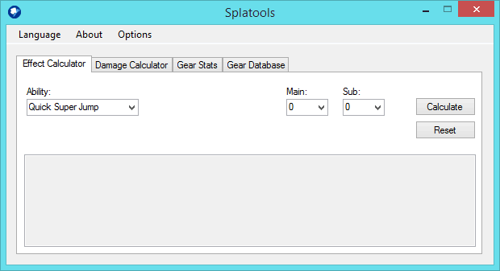 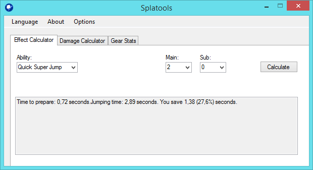 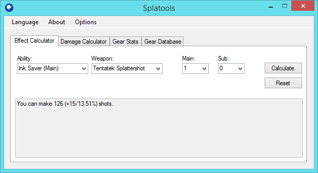
The Damage Calculator is pretty straight forward. You enter the number of Damage Ups you have and the number of Defense Ups your opponent has and also enter the base damage the weapon deals. It will tell you how much damage you would deal if you hit the enemy. If you use a normal shooting weapon or sub weapon, you can also turn "Cap damage?" on, because they have a cap that cannot be exceeded.
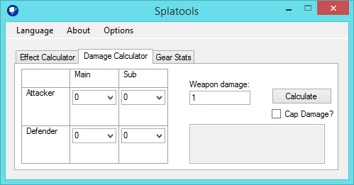 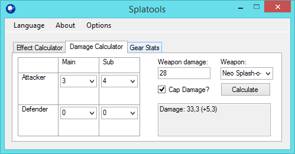 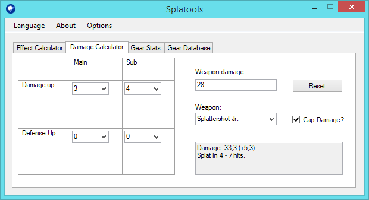
The Gear Stats will tell you the overall effects of your set. Just enter the abilities you have on certain gear and see the results. Abilities like Comeback will show you the results for the time they are active.
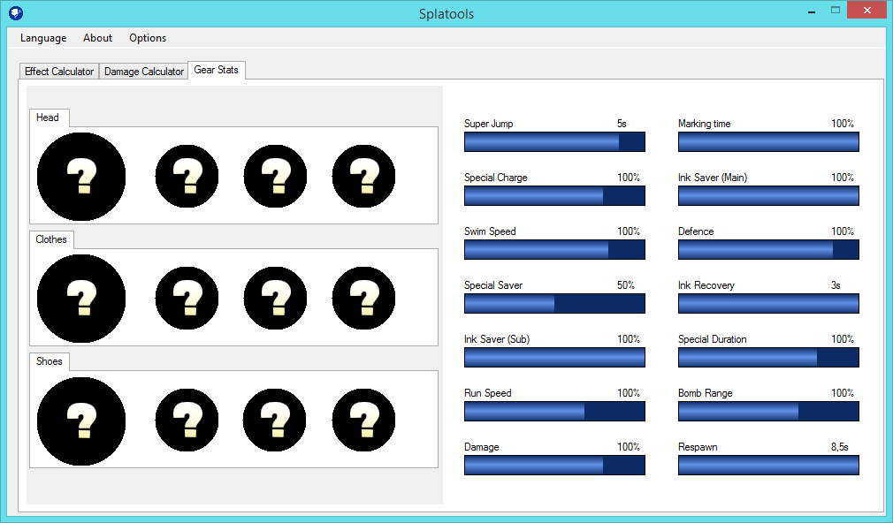 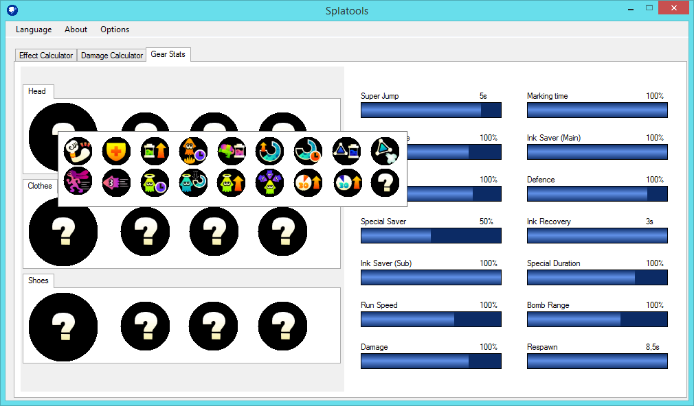 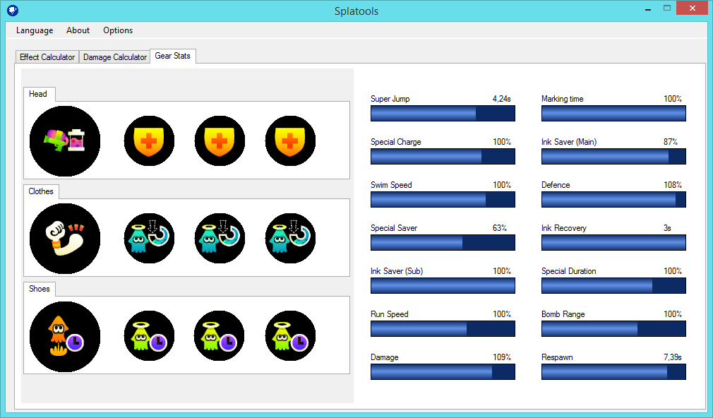
The Gear Database gives you a list of every gear in the game. You can also search and filter them to find the gear you want pretty fast. After you have chosen one piece of gear, you can even add the ability and the favoured abilities to the Gear Stats page.
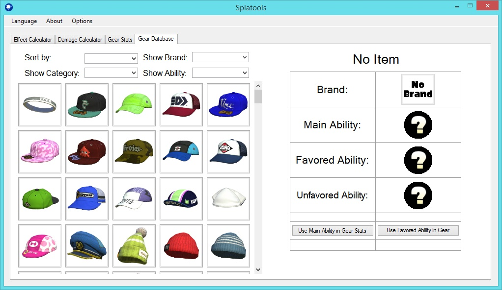 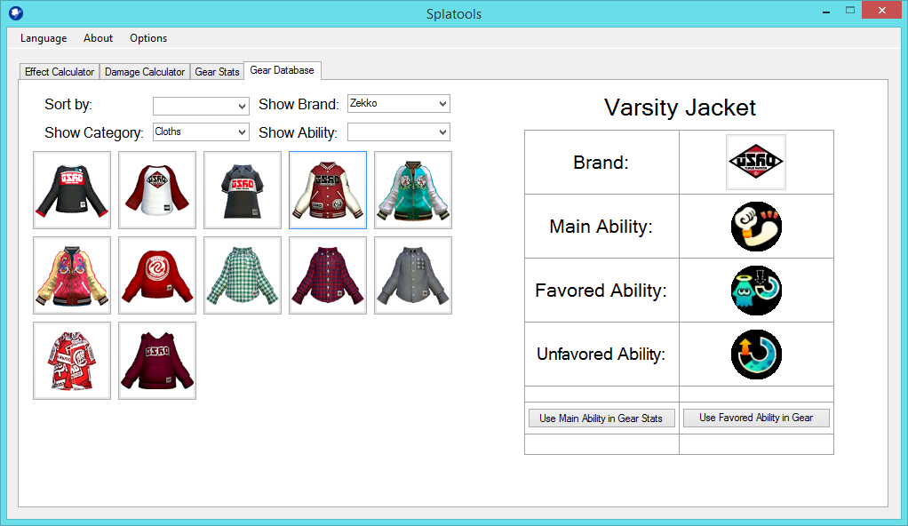 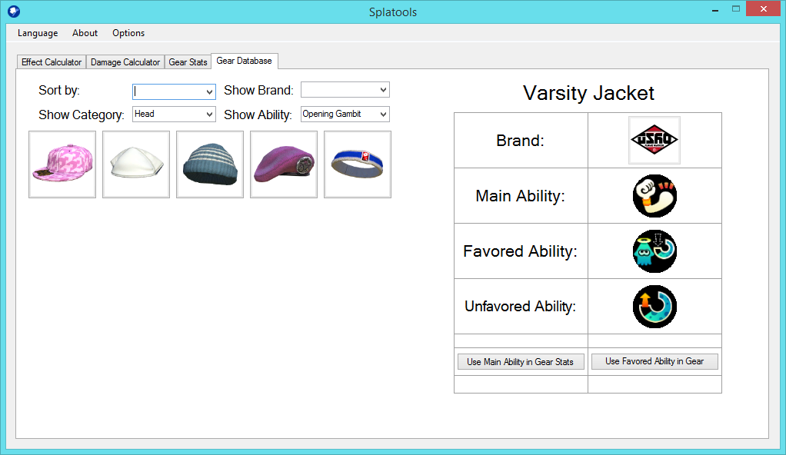
Right now this tool supports English, German, French, and Japanese. If you want any other language included, just tell me. If you have any further wishes for this tool, drop Lean a message on Twitter. More features will come in future updates.
Splatools can be run by any Windows system, where Microsoft .NET Framework 4 is installed. If you are using a Mac, you can use WineBottler.
You can download the latest version here.
Special thanks to these people: